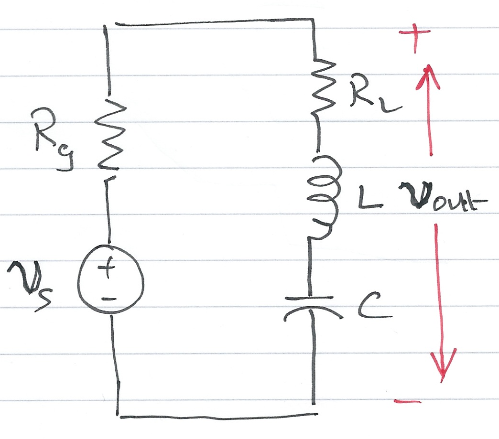
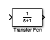
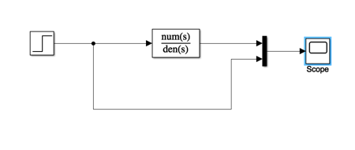

The preparatory reading for this section is Chapter 4.4 of Karris which discusses transfer function models of electrical circuits.
An annotatable copy of the full notes for this presentation will be distributed before the third class meeting as Worksheet 7 in the handouts section for week 3 in the _Content Library of the OneNote Class Notebook. You can also view the notes for this presentation as a webpage (HTML) and as a downloadable PDF file.
- Transfer Functions
- A Couple of Examples
- Circuit Analysis Using MATLAB LTI Transfer Function Block
- Circuit Simulation Using Simulink Transfer Function Block
% Matlab setup
cd ../matlab
pwd
clear all
format compact
This ratio is known as the voltage transfer function denoted $G_v(s)$:
Similarly, the ratio of the output current $I_{\mathrm{out}}(s)$ to the input current $I_{\mathrm{in}}(s)$ under zero initial conditions, is called the cuurent transfer function denoted $G_i(s)$:
In practice, the current transfer function is rarely used, so we will use the voltage transfer function denoted:
$$G(s) = \frac{V_{\mathrm{out}}(s)}{V_{\mathrm{in}}(s)}$$Examples
See worksheet7 for the worked solutions to the examples. We will work through these in class. Here' I'll demonstrate the MATLAB solutions.

- Replace $v_s(t)$, $R_g$, $R_L$, $L$ and $C$ by their transformed (complex frequency) equivalents: $V_s(s)$, $R_g$, $R_L$, $sL$ and $1/(sC)$
- Use the Voltage Divider Rule to determine $V_\mathrm{out}(s)$ as a function of $V_s(s)$
- Form $G(s)$ by writing down the ratio $V_\mathrm{out}(s)/V_s(s)$
Worked solution.
Pencast: ex6.pdf - open in Adobe Acrobat Reader.

Then replace the complex variable $s$ with $j\omega$, and the circuit constants with their numerical values and plot the magnitude
$$\left|G(j\omega)\right| = \frac{\left|V_{\mathrm{out}}(j\omega)\right|}{\left|V_{\mathrm{in}}(j\omega)\right|}$$versus radian frequency $\omega$ rad/s.
- Replace the components and voltages in the circuit diagram with their complex frequency equivalents
- Use nodal analysis to determine the voltages at the nodes either side of the 50K resistor $R_3$
- Note that the voltage at the input to the op-amp is a virtual ground
- Solve for $V_{\mathrm{out}}(s)$ as a function of $V_{\mathrm{in}}(s)$
- Form the reciprocal $G(s) = V_{\mathrm{out}}(s)/V_{\mathrm{in}}(s)$
- Use MATLAB to calculate the component values, then replace $s$ by $j\omega$.
Plot
$$\left|G(j\omega)\right|$$
on log-linear "paper".
Worked solution.
Pencast: ex7.pdf - open in Adobe Acrobat Reader.
The Matlab Bit
See attached script: solution7.m.
syms s;
R1 = 200*10^3;
R2 = 40*10^3;
R3 = 50*10^3;
C1 = 25*10^(-9);
C2 = 10*10^(-9);
den = R1*((1/R1+ 1/R2 + 1/R3 + s*C1)*(s*R3*C2) + 1/R2);
simplify(den)
Simplify coefficients of s in denominator
format long
denG = sym2poly(ans)
numG = -1;
Plot
For convenience, define coefficients $a$ and $b$:
a = denG(1);
b = denG(2);
w = 1:10:10000;
Gs = -1./(a*w.^2 - j.*b.*w + denG(3));
Plot
semilogx(w, abs(Gs))
xlabel('Radian frequency w (rad/s')
ylabel('|Vout/Vin|')
title('Magnitude Vout/Vin vs. Radian Frequency')
grid
Using Transfer Functions in MATLAB for System Analysis
Please use the file tf_matlab.m to explore the Transfer Function features provide by MATLAB. Open the file as a Live Script to see a nicely formatted document.

The Simulink transfer function (Transfer Fcn) block implements a transfer function
The transfer function block represents a general input output function
$$G(s) = \frac{N(s)}{D(s)}$$and is not specific nor restricted to circuit analysis.
It can, however be used in modelling and simulation studies.
Verify the result with Simulink.
The Matlab solution: example8.m
so substituting the component values we get:
$$G(s) = \frac{V_{\mathrm{out}}}{V_{\mathrm{in}}} = \frac{-1}{s^2 + 3s + 1}$$We can find the step response by letting $v_{\mathrm{in}}(t) = u_0(t)$ so that $V_{\mathrm{in}}(s)=1/s$ then
$$V_{\mathrm{out}}(s) = \frac{-1}{s^2 + 3s + 1}.\frac{1}{s}$$We can solve this by partial fraction expansion and inverse Laplace transform
as is done in the text book with the help of MATLAB's residue function.
Here, however we'll use the LTI block.
Define the circuit as a transfer function
G = tf([-1],[1 3 1])
step response is then:
step(G)
Simples!
Simulink model
See example_8.slx
open example_8

Result

Let's go a bit further by finding the frequency response:
bode(G)